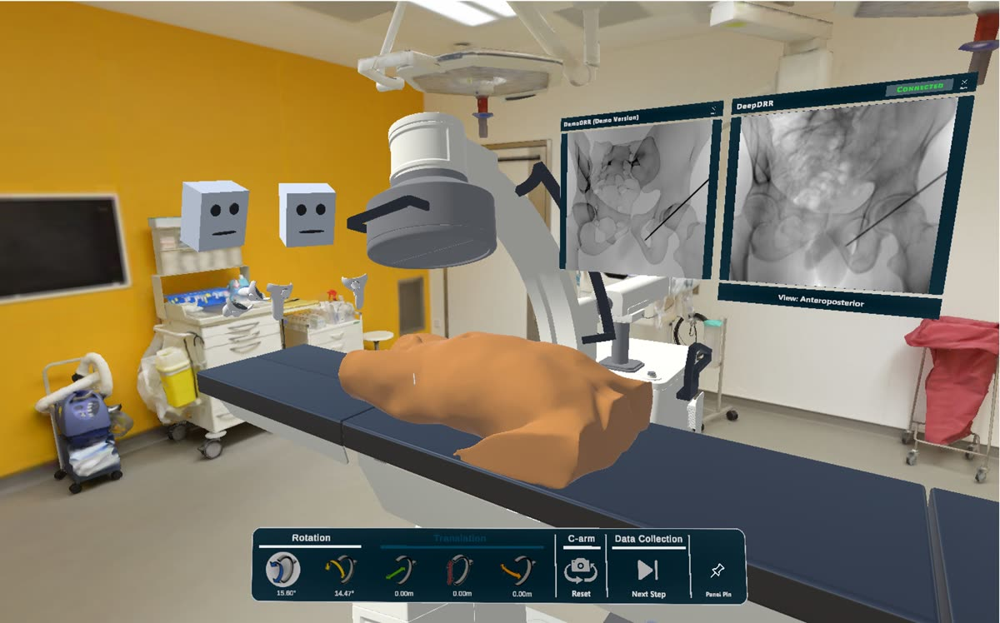
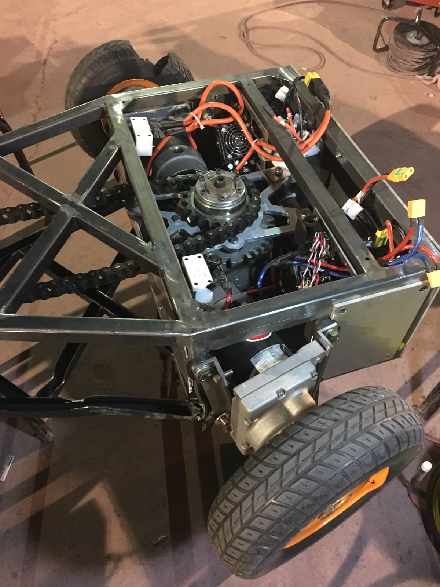
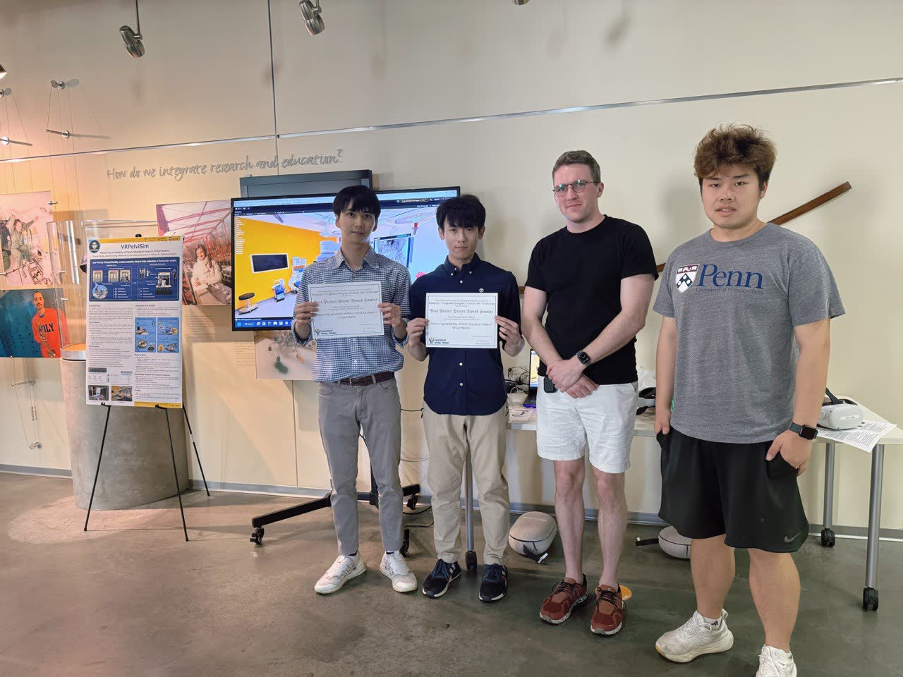

The lab passed 59% of its tasks when it landed at the partner's R&D headquarters. On-site, I debugged everything with a wire in it — actuators, motor controllers over Modbus and CAN, the control software above them — and validated a monocular calibration method in MuJoCo. Pass rates hit 100%, failures fell 94%, and live demos turned into expansion orders. Delivery ran bilingual, FAT/SAT evidence included. Now: safety-gated LLM-agent tooling for operations.
From 59 to 100 percent:
Task pass rate on a live production pharma deployment
Down 94 percent:
Operational failures after system-level reliability overhaul
From 29 to 98 percent:
Target hit rate under real-world operating constraints
1st
U.S. commercial deployment of XtalPi's platform — stabilized end-to-end
01 — Experience
Shipping robots that work outside the lab
Five roles, three eras. Skim the bold lines for the arc — open a story where you want the how.
Production era · Shipping robots to customers
XtalPi Inc.
Promoted to NA Manager Aug 2024 – Present · Boston, MAAutomation Engineer → Manager, Automation Systems & Delivery – North America
I built a fully automated chemistry lab — ABB arms, AGVs, modular systems — then moved in with it when it shipped to a Fortune-500 pharma partner's R&D headquarters.
Live demos of the stabilized system won multi-million-dollar expansion orders.
How 59% became 100%
ABB RobotsAGV / AMRROS 2MuJoCoOpenCVLLM AgentsPythonC++
Research era · Perception, medical robotics, lab automation
Axle Informatics · NIH
Sep – Dec 2023 · Rockville, MDAutomation Research Associate (Internship)
Four months at NIH: design a high-density storage subsystem, put mobile robots and arms behind it, and leave the lab faster than I found it.
End-to-end lab processes ran 37% faster.
The story — four months, one subsystem
The High-Density Storage subsystem paired Omron mobile robots with PF400 arms — structure strength-validated in Femap before committing to hardware. The weak link was perception, at 53% reliability; image-preprocessing and shape-detection work in OpenCV raised it to 98%, and the whole lab moved faster for it.
OpenCVPythonCreoFemap3D Printing
Laboratory for Computational Sensing & Robotics, JHU
May – Sep 2023 · Baltimore, MDResearch Assistant · Advisor: Russell H. Taylor
One summer in Russell Taylor's lab, on a concrete question: can deep-learning vision take real time out of making a malaria vaccine?
Production setup time down 62%.
The story — vision on the line
Two models carried the project: YOLOv5 hitting 96% on region-of-interest detection, and class-activation mapping reaching 95% accuracy predicting vaccine quality. The payoff was practical, not academic — less setup, faster production. It was my first taste of vision that had to work for a process, not a paper.
YOLOv5PyTorchPython
Hardware era · Machines built to survive
Dynacolor
May 2019 – Mar 2021 · Taipei, TaiwanR&D Engineer
My hardware years: engineering a 6-DOF camera that guides surgeons by fluorescence — and cannot be the thing that fails mid-procedure.
Sealed and certified — IP66/67 ingress protection, IK10 impact rating.
The story — designed to survive
Design-for-manufacturing, end to end: die-cast and injection-molded parts, GD&T tolerancing, mechanisms articulating a 6-DOF camera for fluorescence-guided surgery. When defects crept into production, I traced root causes and wrote the SOPs that kept them fixed — defects fell more than 80%. This is where I learned that reliability is designed, not patched.
CreoGD&TDie CastingInjection Molding
iQIYI · Clash Bots
1B+ views on TV Aug 2017 – Jun 2018 · Beijing, ChinaRobotics Engineer
Four engineers, eight months, one 110 kg combat robot that had to survive prime-time television.
Led the four-person build from bare steel to broadcast.
The story — build, break, rebuild
Combat robots don't fail gracefully, so we designed for the hit we couldn't predict: impact-resistant mechanisms, RF control solid enough for a broadcast arena, welded steel that had to survive and fight again. I led the team of four through design, build, wiring, and testing — doing the welding myself when it came to it — on an eight-month schedule.
Mechanism DesignRF ControlWeldingCreo
Johns Hopkins University
M.S.E. in Robotics · GPA 3.9 · 2022 – 2024
National Taiwan University
B.S. in Mechanical Engineering · 2014 – 2018
02 — Featured Projects
Selected work, with the robots on camera
Industry systems, JHU robotics research, and the AI tooling around them. More on GitHub.
Stabilizing a Production Robotic Chemistry Platform
59→100% task pass rate · −94% operational failures, on site at a Fortune-500 pharma partner
XtalPi's first U.S. commercial deployment: an automated chemistry R&D platform — robot arms, AGVs, vision, and scheduling — that had to hold up under a customer's real operating constraints. As primary on-site system owner, I led the reliability overhaul that took it from demo-grade to production-grade, contributing to customer adoption and a multi-million-dollar expansion. Details are proprietary — I’m happy to walk through them live.
ABB RobotsAGV / AMRVision-Guided ManipulationReliability EngineeringAblation TestingError ModelingRoot-Cause AnalysisSystem ArchitecturePythonC++
AI Operations Agent for Robotic Automation
A safety-gated LLM agent helping engineers run a robotic chemistry lab
An AI assistant for a robotic high-throughput chemistry lab — read-only by default, with every real-world action gated behind five safety checks and a full audit trail. Built to production software standards: strict typing, 130+ automated tests behind an enforced coverage gate.
Inside the safety design
The five gates. A real-world action executes only with a registered policy, an authorized engineer role, a passing preflight, an exact confirmation token, and an audit record — miss any one and the agent stays read-only.
The learning loop. Engineer-reviewed incident root-causes feed back into automatic preflight checks, so the same failure class can't slip through twice.
Evidence-first answers. Responses cite hash-verifiable evidence artifacts, backed by a knowledge pipeline that ingests engineering docs with preview-first, human-approved promotion. 42 documented capabilities.
LLM AgentsAgentic WorkflowsKnowledge PipelinesPythonmypy --strictSQLite FTS5CI/CD
5-DoF
tool-tip pose correction, one camera
Monocular Calibration for Robot End-Effectors
Replaced a stereo rig with a single camera — higher precision, less hardware
Contour-based geometric modeling + least-squares regression to estimate 5-DoF tool-tip pose error, with a MuJoCo simulation framework validating accuracy across randomized pose-error cases. Built for solid-dispensing workflows at XtalPi.
MuJoCoOpenCVPythonLeast-Squares
Best Project Award Finalist · CISST ERC

VRPelviSim — VR Training for Fluoroscopic Surgery
Virtual operating room with simulated C-arm & realistic DRR X-ray imaging
Multi-user VR environment emulating real ORs for surgical training and clinical data collection — patient models from real CT data, DeepDRR-powered radiographs, and scalable server deployment. Builds on Killeen et al.'s cross-training research.
UnityMRTKC#ZeroMQDockerAWS / Azure
As seen on TV
Clash Bots — 110 kg Combat Robot
Built for a TV series with 1B+ views worldwide
Led a four-person team building a heavyweight battle robot in eight months: impact-resistant mechanism design, RF control, welding, and full electro-mechanical integration.
Inside the build — post-battle

Back from the arena after a fight — welded chassis, chain drive, and contactor-switched motors, battle-worn but holding together. Designed, built, and wired by the team.
CreoRF ControlWeldingMotors & Contactors
Personal tooling
Agent Workbench — Memory for AI Coding AgentsPip-installable memory scaffold: incremental digests, cross-project lessons, fail-closed privacy validation
A CLI that installs a memory scaffold into any codebase: incremental workspace digests (unchanged files never re-read), cross-project weekly reports and due-date attention lists, and cross-project lesson promotion through a fail-closed privacy validator — rejecting emails, URLs, absolute paths, and credential terms. Hardened for daily use: per-workspace operation locks, bounded document extraction, rotating audit logs, one-command rollback.
PythonCLI DesignpytestPrivacy ValidationDocs/OCR Extraction
Lab Duty Reminder BotShift-aware chat-ops reminders that re-ping until someone acknowledges
A scheduled chat-ops service reminding lab staff of recurring facility duties — AC toggles every two hours, nightly charging and tidy-up — with shift-aware @mentions, interactive cards, and emoji-acknowledgment polling that automatically re-sends until confirmed. Dockerized for 24/7 cloud hosting.
PythonFastAPIAPSchedulerDockerRender
Earlier academic work — Johns Hopkins, 2022–24
UR5 Robot Arm — Control & Image DrawingInverse kinematics, Jacobian & resolved-rate control — the arm draws the JHU logo
Precision pick-and-place and trajectory control on a real UR5, handling singularities, collision constraints, and workspace limits. Finale: the arm hand-draws the Johns Hopkins logo.
ROSMATLABKinematics
Sensor-Based UR5 ManipulationHand-eye calibration to 0.2 mm end-effector error · 73% faster RRT planning
Vision-guided manipulation with Park–Martin hand-eye calibration to 0.2 mm end-effector error; control time cut by 50%+ and RRT planning efficiency up 73% via control tuning and a C++ k-d tree implementation.
ROSMATLABC++RRT
Extending Human Perception with HoloLens 2Effective field of view +33%, past 180° — via a radar mini-map AR UI
Unlocks HoloLens 2 Research Mode to tap all four environmental grayscale cameras, tracking ArUco-marked objects in real time — within 5% tracking error — and surfacing their position and height on a radar-style AR mini-map, expanding the user's effective field of view by 33% to beyond 180°.
UnityC#ArUcoHoloLens 2
Semantic Segmentation with Transfer LearningPixel accuracy 66% → 81%, mIoU 60% → 78% on a self-collected street dataset
Transfer learning for autonomous-driving segmentation with DeepLabv3+ (MobileNet backbone): pre-trained on Cityscapes, fine-tuned on a self-collected JHUStreet dataset — with clear gains on cars and traffic signs in urban scenes.
PyTorchDeepLabv3+Python
Stereotactic Navigation — Calibration & Distortion CorrectionBernstein-polynomial distortion correction for surgical navigation
Mathematical models for precise tracking: 3D point-cloud registration, pivot calibration, and distortion correction — pinpointing instrument tips relative to CT frames.
PythonRegistrationPivot Calibration
Structure-from-Motion 3D ReconstructionMatching accuracy +70% via Lowe's ratio test — 3D geometry from monocular video
A Structure-from-Motion pipeline recovering camera trajectories and 3D geometry from image sequences — feature matching hardened with Lowe's distance-ratio test (+70% matching accuracy), pose estimation, and reconstruction from ordinary video content.
PythonOpenCVSfM
Iterative Closest Point for 3D Surface MatchingCovariance-tree accelerated registration for computer-integrated surgery
ICP variants for high-accuracy 3D surface registration: brute-force nearest-neighbor search versus covariance-tree acceleration, evaluated for accuracy and runtime.
PythonNumPySciPyPlotly
03 — Skills
Hardware to software, sim to production
Robotics & Systems
ROS / ROS 2Motion PlanningKinematics & CalibrationABB RobotsUR5AGV / AMRSystem ArchitectureReliability Engineering
Perception & ML
OpenCVYOLOPyTorchTensorFlowCamera CalibrationHand-Eye CalibrationObject Localization
Simulation & XR
MuJoCoGazeboUnityMRTKHoloLens 2DeepDRR
AI & Agentic Systems
LLM AgentsAgentic Workflow DesignTool-Use & Function-Calling DesignSafety Gating & GuardrailsEval & Test HarnessesKnowledge PipelinesMulti-Agent Orchestration
Software & Mechanical
PythonC++C#MATLABLinuxGitDockerAWS / AzureCreoSolidWorksFemapGD&T
04 — About
From welding torches to vision pipelines
I started in mechanical engineering at National Taiwan University, then spent my early career with my hands on hardware — building combat robots for national television and engineering surgical camera systems that had to survive drops, dust, and operating rooms.
After Dynacolor, I completed my national service in Taiwan and prepared for graduate school. Wanting to close the loop between mechanism and intelligence, I then earned my M.S.E. in Robotics at Johns Hopkins (GPA 3.9), working on medical robotics at LCSR under Russell H. Taylor and lab automation at the NIH.
Today at XtalPi I lead North America automation systems, owning production deployments where a robot that "usually works" isn't good enough — and building the AI-agent layer that helps engineers operate those systems. The common thread: I'm happiest at the boundary where mechanical design, perception, software, and AI meet — and I've shipped work in all four.
I also build with AI the way I build robots: orchestrated multi-agent development workflows — parallel branches with cross-model review gates, strict typing, and enforced test coverage before anything merges. The same discipline I apply to hardware, applied to the agents that help run it.

05 — Contact
Let's build something that works.
Open to conversations about robotics systems, perception, simulation, and AI-agent tooling for real-world machines.